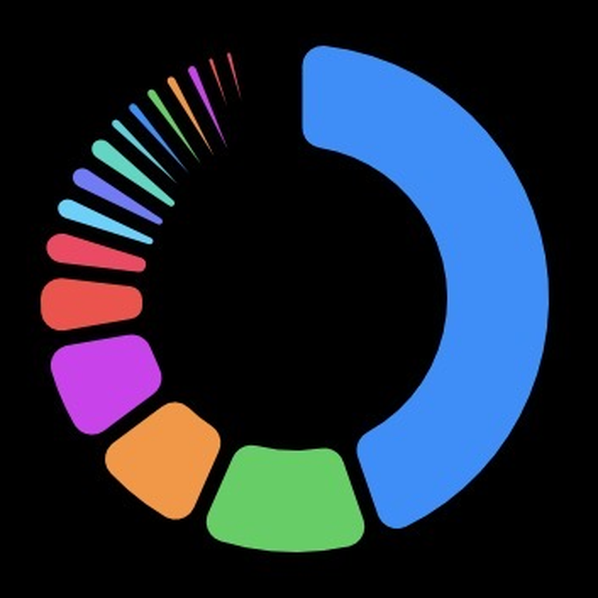

COMPANY
| 会社名 | OneView合同会社 |
|---|---|
| 設立 | 2026年6月29日 |
| 法人種別 | 合同会社 |
| 法人番号 | 8011003024762 |
| CEO | 小野澤 留偉 |
| 所在地 | 東京都渋谷区恵比寿西2丁目4番8号 ウィンド恵比寿ビル8F |
| 資本金 | 100,000円 |
| 事業内容 | Web・モバイルアプリの受託開発 / プロジェクトマネジメント支援 / AIラーニング |
SERVICE
要件定義から設計・開発・リリースまで、Web／モバイルアプリを成果物として一貫開発・納品します。企画段階からの伴走で、確かなプロダクトをかたちにします。
SERVICE
AI・機械学習を活用した学習支援や、AIリテラシー向上のための教育プログラムを提供します。実務に活かせるスキル習得を、伴走しながらサポートします。
PRODUCT

Bonaは、個人事業主・フリーランスのための総合iOSアプリです。現金・株式・物的資産・負債といった資産管理から、収支記録、FIRE計画や税金シミュレーションまでを1つに集約。人脈をグラフで可視化するネットワーク機能も備えます。クラウド同期で複数端末に対応し、あなたの「今」と「これから」を見える化します。
App Storeで見るCONTACT
下のフォームにそのままご入力・送信いただけます。